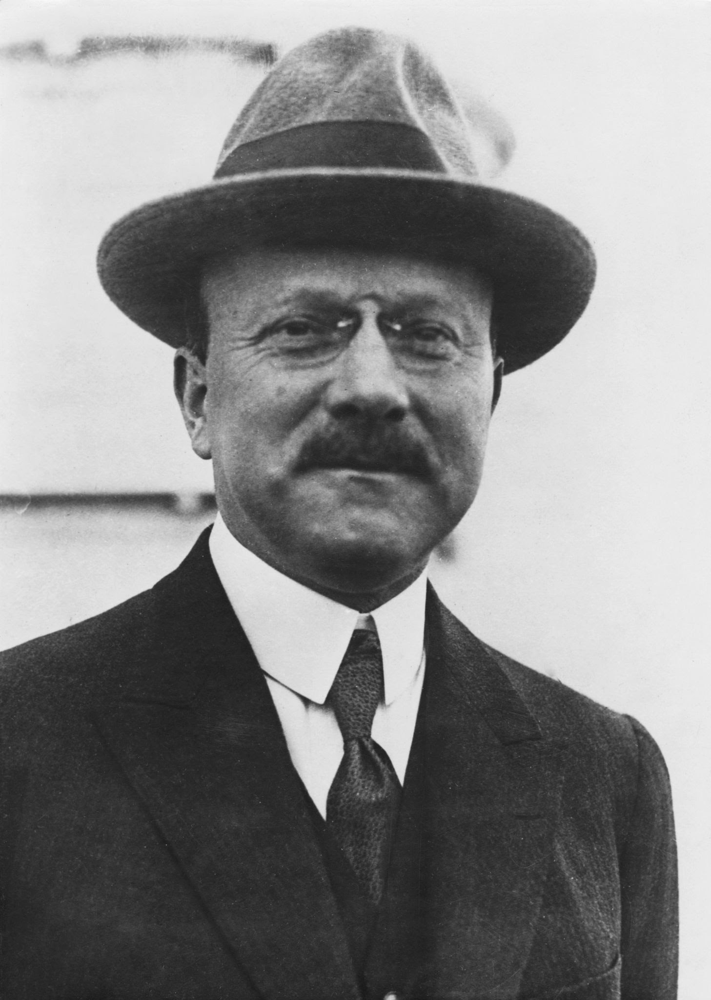

Citroen


(París, 1878 - id., 1935) Ingeniero y empresario francés, fundador de la factoría automovilística francesa que lleva su apellido; junto con otros empresarios e inventores como Carl Benz, Gottlieb Daimler, Louis Renault o Giovanni Agnelli, fue uno de los pioneros de la entonces naciente industria del automóvil. Estudió en la Escuela Politécnica de París y ya en sus inicios como director industrial coordinó con éxito la fabricación de engranajes de dientes angulares. Inició su trayectoria en el sector de la automoción en 1908, en la fábrica de automóviles Mors, donde consiguió aumentar de manera espectacular la producción de vehículos, que pasó de 120 a 1.200 unidades anuales en cinco años.
A comienzos de la Primera Guerra Mundial inauguró su propia factoría, Citröen. Concebida originariamente para producir municiones, al acabar la contienda comenzó a fabricar automóviles con el método de producción en cadena (ya implantado por Henry Ford en Estados Unidos) hasta convertirse en una de las principales firmas de la automoción europea en la segunda etapa de la Revolución Industrial. Apoyándose en intensivas e ingeniosas campañas publicitarias (llegó a cubrir la torre Eiffel con las letras de su marca) y en un diseño simple que facilitaba la fabricación, llegó a vender 25.000 unidades del famoso Tipo A, al que seguirían otros modelos tan populares como el C-6, del que se produjeron 360.000 unidades. Otras claves de su éxito fueron la durabilidad y robustez de su motores, capaces de recorrer cuatrocientos mil kilómetros sin averías, y su bajo consumo en relación con los estándares de la época.
Siempre apasionado por la innovación tecnológica, André Citröen presentó en 1934 el primer vehículo con tracción delantera, pero las grandes inversiones que determinó la innovación lo llevaron a presentar suspensión de pagos; la empresa Michelin Tire Company se hizo cargo de su reorganización. El fracaso de su proyecto afectó seriamente su salud y murió al año siguiente. En los años sesenta, la empresa Citroën absorbió a varias casas automovilísticas, pero en 1976 fue absorbida a su vez por Peugeot para evitar una nueva quiebra, aunque las dos marcas de vehículos están estrictamente diferenciadas.